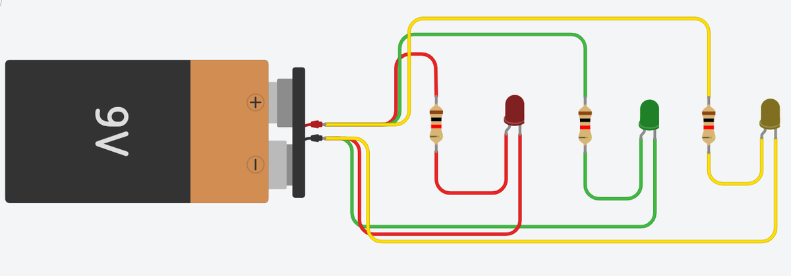

1Le modèle

Pile 9 V▲ RésistanceLED ▼+−👆 Touche l'image pour l'agrandir
Astuce : une couleur de fil par chemin. C'est plus facile à suivre !
2Le matériel
1
pile de 9 V
3
résistances
3
LED (rouge, verte, jaune)
+
des fils
3Les étapes
- 1Je pose tous les composants comme sur le modèle.
- 2Je choisis une couleur de fil pour chaque chemin.
- 3Je relie le + de la pile à une patte de chaque résistance.
- 4Je relie l'autre patte de la résistance à la patte longue de sa LED.
- 5Je relie la patte courte de chaque LED au − de la pile.
- 6Je touche « Démarrer la simulation ».
!
En dérivation : chaque LED a son propre chemin. Le + de la pile → la résistance → la LED → le − de la pile.
✓Je vérifie
🎉 Bravo ! Ton circuit marche.
+Bonus
Je refais les 3 LED en série, avec une seule résistance. Que se passe-t-il ?

📖 Lexique français → عربية
| La pile | العمود الكهربائي |
| Le + / le − de la pile | القطب الموجب / القطب السالب |
| La LED | الصمام الثنائي الباعث للضوء |
| La patte longue / courte | الرجل الطويلة / القصيرة |
| La résistance | المقاومة (الموصل الأومي) |
| Le bouton-poussoir | الزر الضاغط |
| Le fil | السلك الموصل |
| Circuit fermé / ouvert | دارة مغلقة / مفتوحة |
| En série | على التوالي |
| En dérivation | على التوازي |
| Le court-circuit | الدارة القصيرة |